Software infrastructure for the neuroscience community
IBL Meeting 2026
About us
Neuroinformatics Unit
Neuroinformatics Unit
- Sainsbury Wellcome Centre & Gatsby Computational Neuroscience Unit, UCL (London)
- (Systems) neuroscience & machine learning research software engineering group
What we do
- Data management (specifications, tools)
- Data analysis software (anatomy, electrophysiology, functional imaging, behaviour)
- Collaborations (data science, software development, productionisation)
Current projects
- Data standardisation and management
- Developer tools
- Extracellular electrophysiology analysis
- Computational neuroanatomy
- Video behavioural analysis
- Multiphoton imaging analysis
Current projects
- Data standardisation and management
- Developer tools
- Extracellular electrophysiology analysis
- Computational neuroanatomy
- Video behavioural analysis
- Multiphoton imaging analysis
Data management
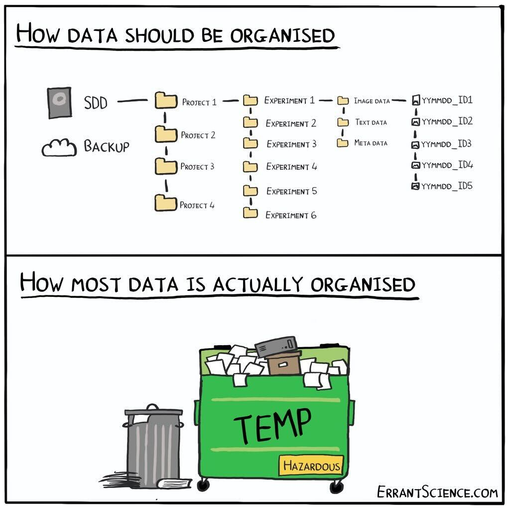
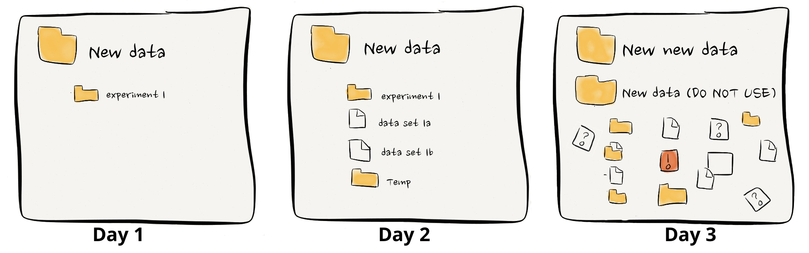
NeuroBlueprint specification
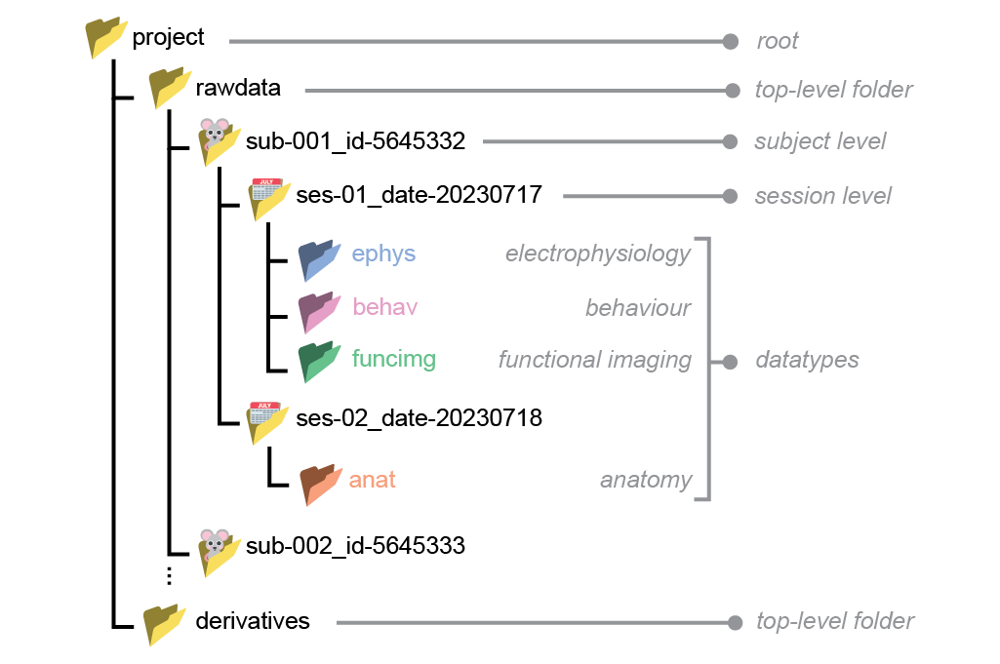
datashuttle
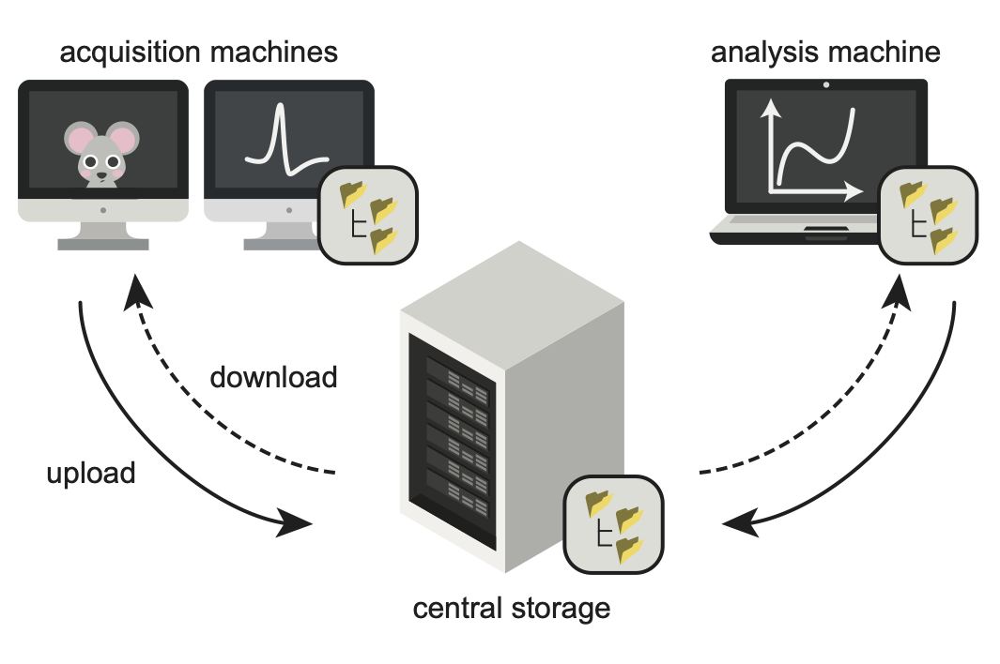
datashuttle TUI
datashuttle scripting
from datashuttle import DataShuttle
project = DataShuttle("my_first_project")
project.make_config_file(
local_path=r"C:\Users\Joe\data\local\my_first_project",
central_path=r"C:\Users\Joe\data\central\my_first_project",
connection_method="local_filesystem",
)
project.create_folders(
top_level_folder="rawdata",
sub_names="sub-001",
ses_names="ses-001_@DATE@",
datatype=["behav", "ephys"]
)
project.upload_entire_project()
project.download_custom(
top_level_folder="rawdata",
sub_names="all",
ses_names="ses-001_@*@",
datatype="behav"
)Anatomy
BrainGlobe
Established 2020 with three aims:
- Develop general-purpose tools to help others build interoperable software
- Develop specialist software for specific analysis and visualisation needs
- Build an ecosystem and community of computational neuroanatomy tools and users
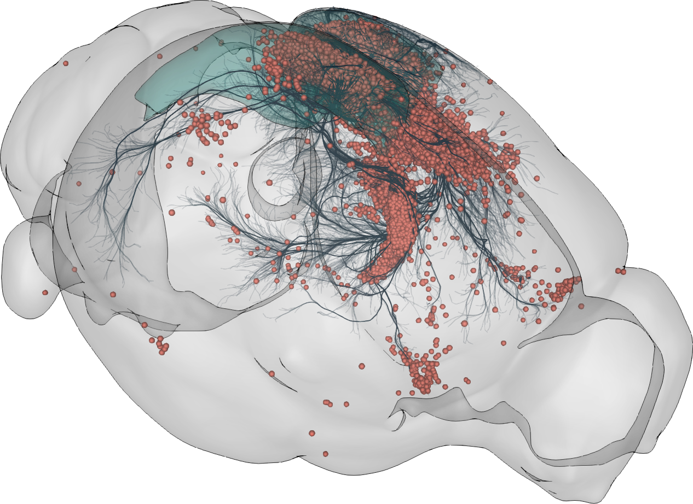
BrainGlobe Atlas API
brainglobe-atlasapi
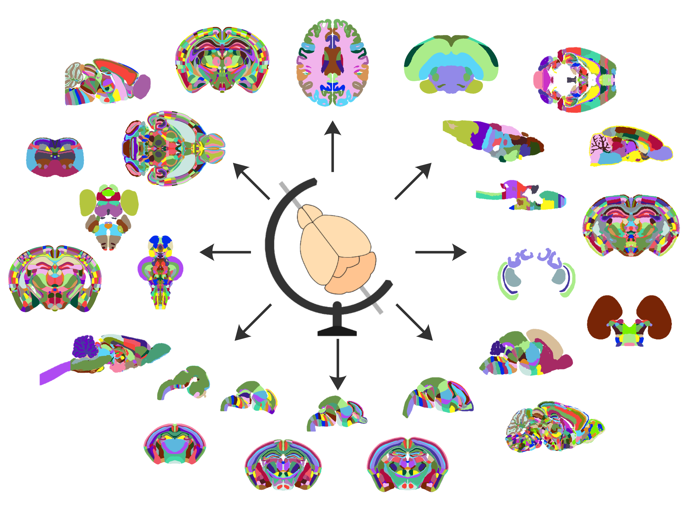
Atlas registration
brainreg
brainglobe-registration
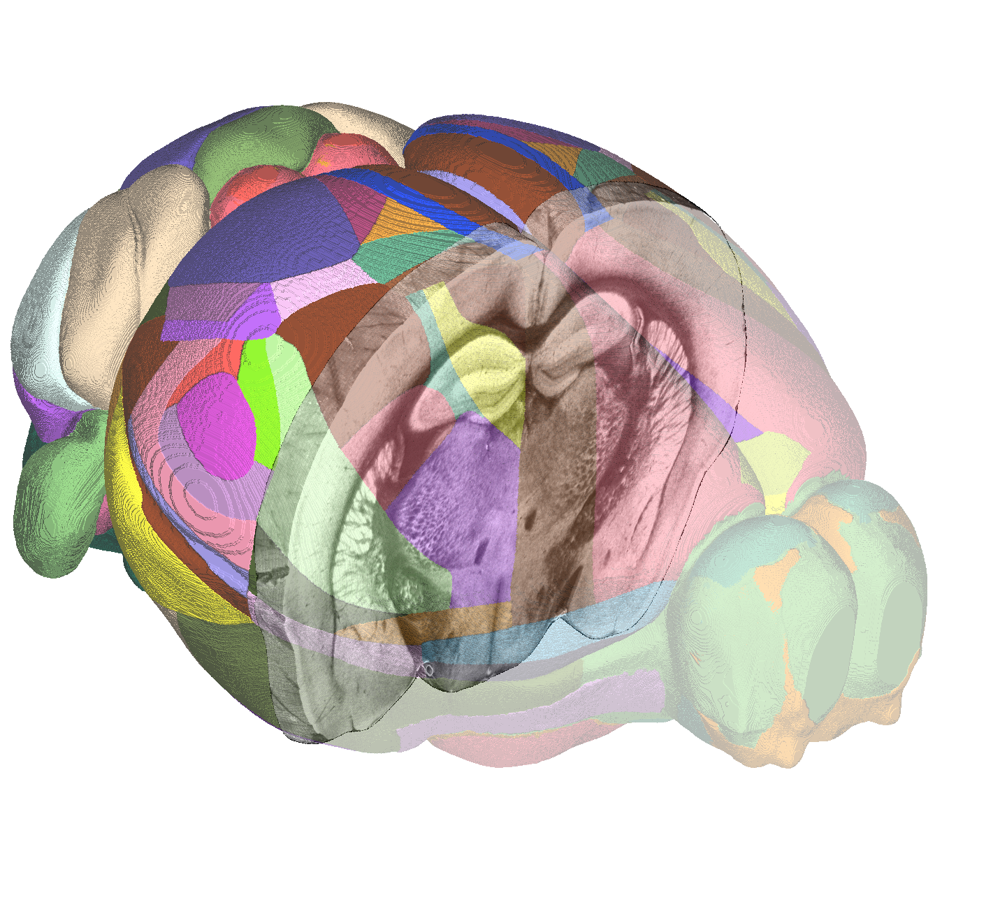
Spatial analysis
brainglobe-segmentation

3D cell detection
cellfinder
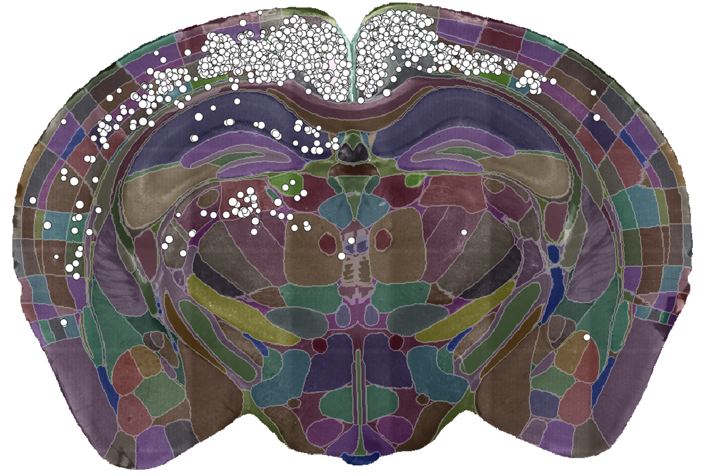
Visualisation
brainrender
More atlases
| Atlas Name | Species | Data Available | BrainGlobe | |
|---|---|---|---|---|
| 1 | Allen Mouse Common Coordinate Framework | Mouse | ✅ | ✅ |
| 2 | Max Planck Zebrafish Brain Atlas | Zebrafish | ✅ | ✅ |
| 3 | Duke Rat Atlas | Rat | ✅ | ❌ |
| 4 | Canary Brain Atlas | Canary | ✅ | ❌ |
| 5 | Population Based Ferret Brain Atlas | Ferret | ✅ | ❌ |
| 6 | Normal Feline Brain atlas | Cat | ❌ | ❌ |
| ... | ... | ... | ... | ... |
| 168 | Tawny Dragon Lizard Brain Atlas | Tawny Dragon | ✅ | ❌ |
| 169 | Squirrel Monkey Brain atlas | Squirrel Monkey | ✅ | ❌ |
| 171 | Pigeon Brain Atlas | Pigeon | ✅ | ❌ |
Building novel atlases
brainglobe-template-builder

Eurasian blackcap (Sylvia atricapilla)
Behaviour
Markerless pose estimation
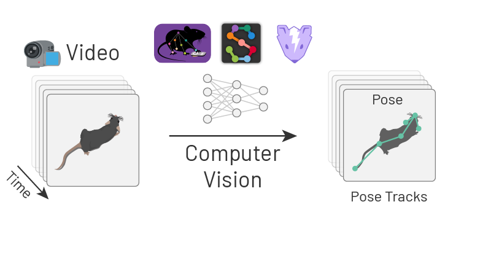
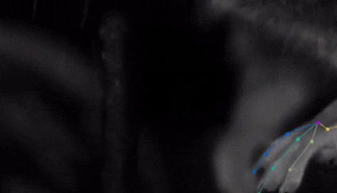
What happens after tracking?
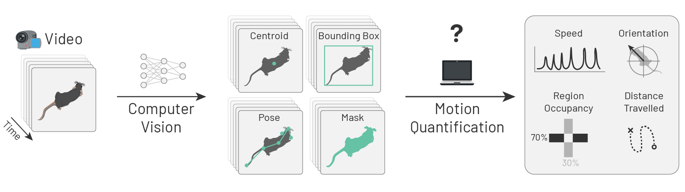
movement
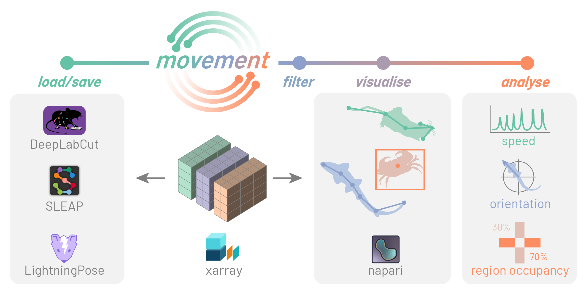
movement GUI
movement scripting
from movement.io import load_dataset
from movement.filtering import rolling_filter
from movement.kinematics import compute_speed
ds = load_dataset(
"path/to/my_data.h5", source_software="DeepLabCut", fps=30
)
ds = ds.sel(time=slice(600, 2400))
ds["position_smooth"] = rolling_filter(
ds["position"], window=5, statistic="median"
)
ds["speed"] = compute_speed(ds["position_smooth"])
ds.to_netcdf("my_data_processed.nc")PoseInterface
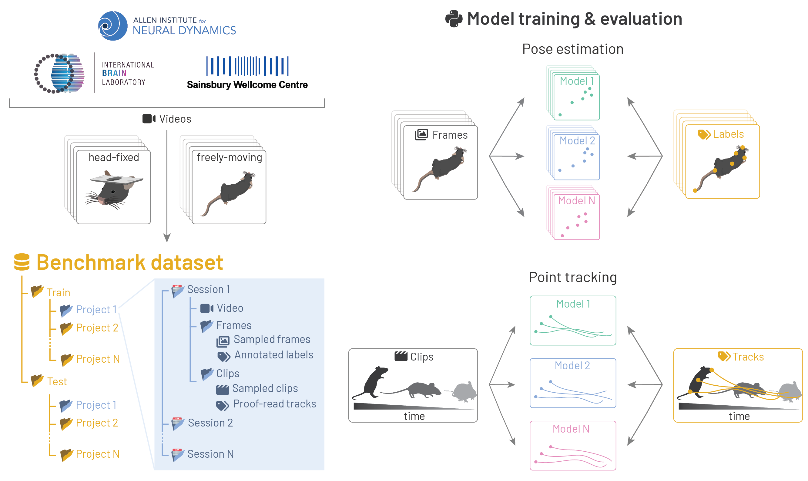
Functional Imaging
photon-mosaic
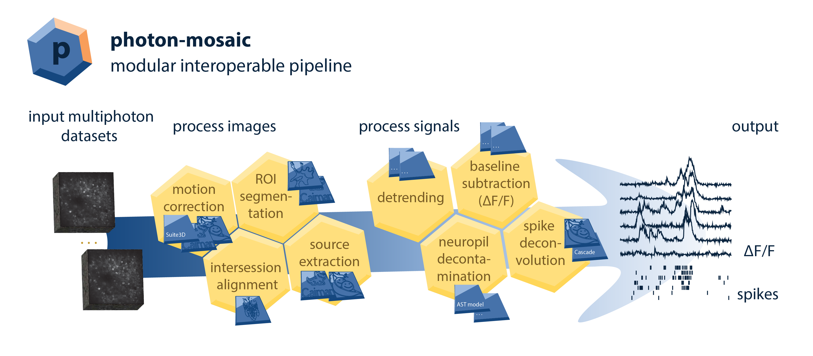
Long-term priorities
- Enable community collaboration
- Reduce duplication of effort
- Ensure interopability
- Sustainability
Thanks
Support
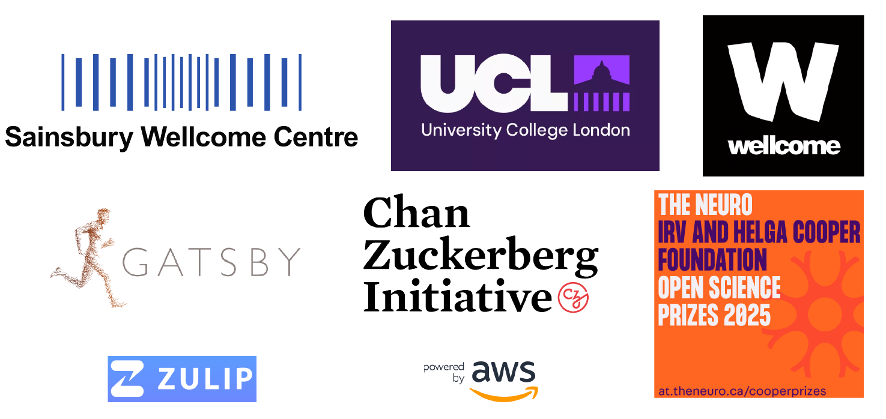
Team
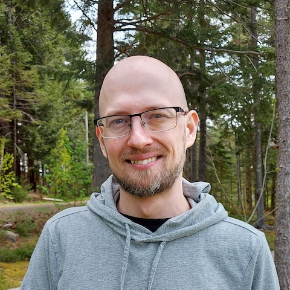
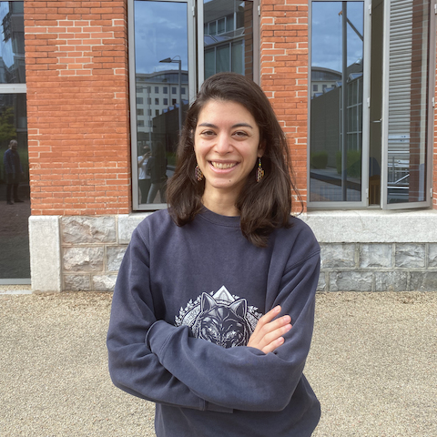
Contributors
Will Graham, Patrick Roddy, Adrien Berchet, Mathieu Bourdenx, bkntr, NovaFae, David Young, Sam Clothier, Gubra-ApS, Kailyn Fields, ramroomh, Samuel Diebolt, Chris Roat, Oren Amsalem, kclamar, Draga Doncila Pop, juanma9613, Jules Scholler, Iaroslavna Vasylieva, Nicolas Peschke, Justin Kiggins, Peter Sobolewski, Simão Bolota, chili-chiu, jaimergp, Sebastian Lammers, Matt Colligan, Paul Brodersen, Carter Peene, francesshei, Sean Martin, Ben Dichter, 4iar, Marco Musy, Anna Medyukhina, stegiopast, EmanPaoli, lidakanari, Alexis Arnaudon, Ziyang Liu, Philip Shamash, Christian Niedworok, Charly Rousseau, Horst Obenhaus, Chryssanthi Tsitoura, Sepiedeh Keshavarzi, Mateo Vélez-Fort, Stephen Lenzi, Rob Campbell, Alessandro Felder, Federico Claudi, Luigi Petrucco, Adam Tyson, Troy Margrie, Tiago Branco, Ruben Portugues, Joe Ziminski, Sofia Miñano, Niko Sirmpilatze, Nicholas Del Grosso, Laura Porta, Lee Cossell, Antonin Blot, David Pérez-Suárez, David Stansby, koushik-ms, Harald Reingruber, Emily Jane Dennis, Peak, Maximilian Blacher, Hernando Martinez Vergara, Estelle, nicole-vissers, GD, Michael Kunst, Estelle Nassar, Sara Mederos, Igor Tatarnikov, Viktor Plattner, Carlo Castoldi, Jingjie Li, Guillaume Le Goc, Harry Carey, Matt Einhorn, Kimberly Meechan, Robert Kozol, Roberto, Axel Bisi, Jung Woo Kim, Saima Abdus, Saarah Hussain, Sacha Hadaway-Andreae, Presa, Henry Crosswell, Nischit Kumar, Kirato Yoshihara, Leonard Schwigon, Dinora Abdulazhanova, Katrin Haase, Dominik Heyers, Isabelle Museliak, Henrik Mouritsen, Simon Weiler, Stella Prins, Richard Dushime, Miguel Xochicale, M S P, Abdul Samad, Prisha Sharma, Farida Yusuf, Anshu Saini, Menna1812, ayush2281, BethCr, Swapnaneel Patra, Xiaoyu Deng, DwarvesEatRocks, DPWebster, Conrad, pranav33317, Biswanath Saha, Federico F, Tim Monko, Kaixiang Shuai, Giulia Paci, Marco Dalla Vecchia, Pavel Vychyk, Ishrat Zaman, Fatma S. Elsharkawy, Chang Huan Lo, Pascal Malkemper, Alireza Saeedi, Nasibeh Amini, Aref hossein Akhlaghi, Li Zhang, Leoni-Marie Webb, Nishanth B, Ardavan Shahrabi, Varun Singh, Harshdip Saha, sid-42-d, James Rowland, Kavyashah067, Aditya Gupta, Luigi Meola, Ajitesh Kumar Singh, Chandrika, Hargun Kaur, Rahul Bera, Hashbrownsss, Divyansh Gupta, Yaroslav Halchenko, Bhanushali Parth Hitesh, Harsh Bhanushali, Tushar Verma, maxstaras, Akseli Ilmanen, Lakshmi Sowmya, Sparshr04, Shigraf Salik, Vedant Vakharia, ishan372or, Holly Morley, Parth Chatupale, Shreecharana N, Eric Denovellis, Iván Varela, Vaco Schiavo, Laura Schwarz, Mohamed Reda, Mikkel Roald-Arbøl, Sanjana Soni, vybhav72954, Kasra Shirvanian, Kunal Dadlani, Dhruv Yadav, angkul07, Eduardo Augusto, CeliaLrt, Animesh Sasan, Tushar Das, Dhruv Sharma, Ishaan Shaikh, Brandon Peri, Shrey Singh, Damacharla Sushma, Sumana Sree Angajala, Shreejan Dolai, Aryan Srivastava, Alexandro Berumen, Alessio Buccino, Arielle Leon, Sergio Valbuena, Matthew Scroggs, kawaho4, Andrew Moffitt, Ankush Agarwal
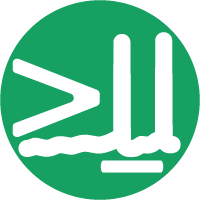